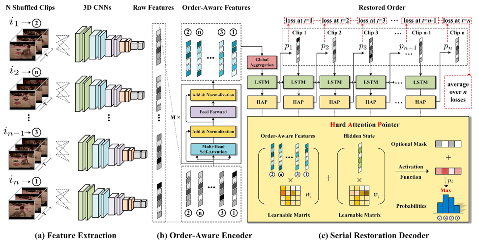
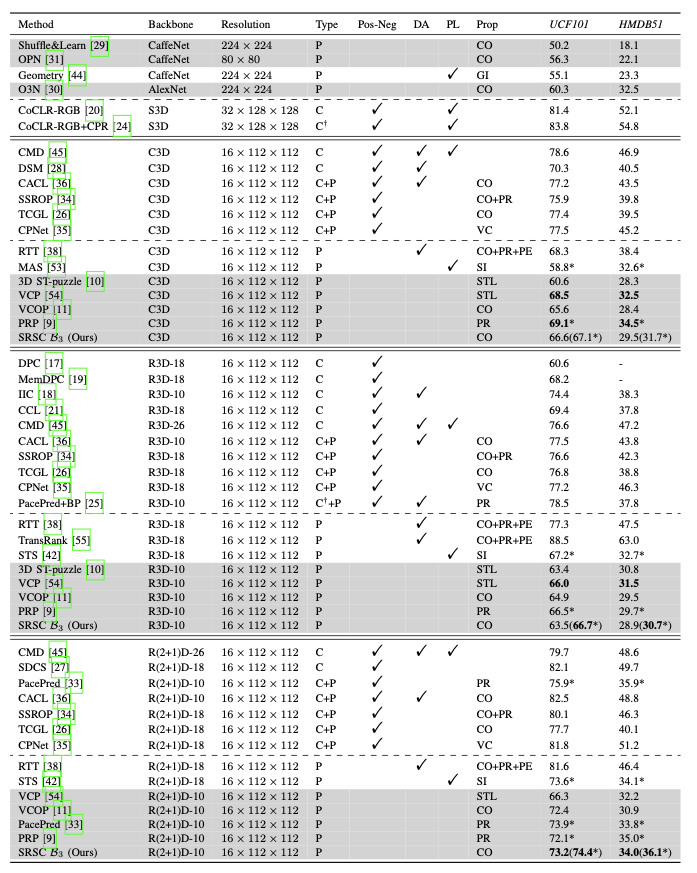
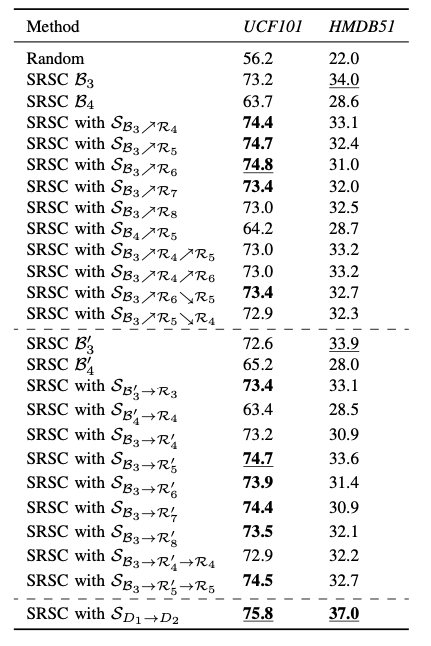
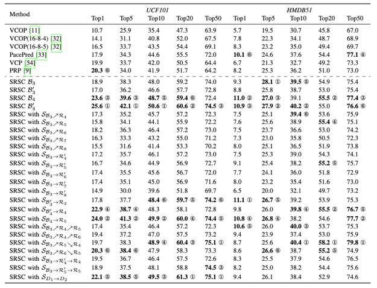
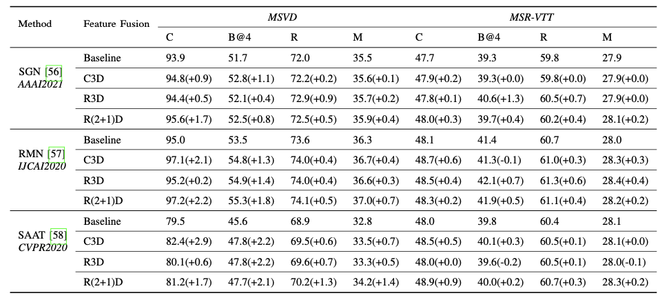

Self-supervised Video Representation Learning by Serial Restoration with Elastic Complexity
Ziyu Chen, Hanli Wang, Chang Wen Chen
Overview:
Self-supervised video representation learning leaves out heavy manual annotation by automatically excavating supervisory signals. Although contrastive learning based approaches exhibit superior performances, pretext task based approaches still deserve further study. This is because the pretext tasks exploit the nature of data and encourage feature extractors to learn spatiotemporal logic by discovering dependencies among video clips or cubes, without manual engineering on data augmentations or manual construction of contrastive pairs. To utilize chronological property more effectively and efficiently, this work proposes a novel pretext task, named serial restoration of shuffled clips (SRSC), disentangled by an elaborately designed task network composed of an order-aware encoder and a serial restoration decoder. In contrast to other order based pretext tasks that formulate clip order recognition as a one-step classification problem, the proposed SRSC task restores shuffled clips into the right order in multiple steps. Owing to the excellent elasticity of SRSC, a novel taxonomy of curriculum learning is further proposed to equip SRSC with different pre-training strategies. According to the factors that affect the complexity of solving the SRSC task, the proposed curriculum learning strategies can be categorized into task based, model based and data based. Extensive experiments are conducted on the subdivided strategies to explore their effectiveness and noteworthy laws. Compared with existing approaches, the proposed approach achieves state-of-the-art performances in pretext task based self-supervised video representation learning, and a majority of the proposed strategies further boost the performance of downstream tasks. For the first time, the features pre-trained by the pretext tasks are applied to video captioning by feature-level early fusion, and enhance the input of existing approaches as a lightweight plugin.
Method:
The pipeline of the proposed task network OAE-SRD for solving the proposed SRSC task is shown in Fig. 1. (a) Feature Extraction: n sampled clips are first shuffled and then fed into 3D backbone CNNs to obtain raw features. (b) Order-Aware Encoder: the raw features are fed into transformer without positional encoding to obtain order-aware features. Global aggregation is utilized to obtain a compact representation as the initial input for decoder. (c) Serial Restoration Decoder: at each step, the hard attention pointer (HAP) outputs the probability of each clip being restored, and the most probable one is chosen and fed as the next input of LSTM. The optional mask is used to adjust task complexity for model based curriculum learning.

Fig. 1. Overview of the proposed SRSC task and model architecture.
Result:
The proposed SRSC task with OAE-SRD task network is compared with several state-of-the-art self-supervised video representation learning methods in Table 1. For a comprehensive comparison, we have summarized the techniques for generating supervisory signals, i.e., construction of positive and negative samples, data augmentation, pseudo-labeling, and utilization of intrinsic properties. These techniques are abbreviated as Pos-Neg, DA, PL and Prop in the header of Table I. As each contrastive learning based SSL has its unique Pos-Neg, DA or PL, we use the checkmark simply to indicate whether some of the three techniques are used. For intrinsic properties (Prop), we have summarized seven types, i.e., CO for chronological order, STL for space-time layout, GI for geometric information, SI for statistical information, PR for playback rate (also called speed or sampling rate in some methods), PE for periodicity (also called palindrome in some methods) and VD for video continuity in Table 1. In the “Type” column, “C” represents contrastive learning based approaches, “P” represents pretext task based approaches and dagger “†” means that the modified approaches work as a plugin. In Table 2, the dashed lines divide the table into three parts, which from top to bottom exhibit the results of task based, model based and data based curriculum learning strategies for the action recognition task. In Table 3, the proposed SRSC task is compared with other state-of-the-art self-supervised video representation learning methods for the nearest neighbor retrieval task. Table 3 also exhibits the performance of nearest neighbor retrieval with the proposed curriculum learning strategies. Table 4 exhibits the performance of existing video caption methods fused with the features pre-trained by the SRSC task.
Table 1. Comparison between the proposed SRSC task and state-of-the-art self-supervised video representation learning methods in terms of action recognition performance on UCF101 and HMDB51.

Table 2. Results of the proposed curriculum learning strategies in terms of action recognition performance on UCF101 and HMDB51.

Table 3. Results of the proposed curriculum learning strategies in terms of nearest neighbor retrieval performance on UCF101 and HMDB51.

Table 4. Results for video captioning methods fused with the features of the SRSC task.

Source Code:
原站插图：图片暂留白SRSC1.0.zip
Citation:
Please cite the following paper if you find this work useful:
Ziyu Chen, Hanli Wang, and Chang Wen Chen, Self-supervised Video Representation Learning by Serial Restoration with Elastic Complexity, IEEE Transactions on Multimedia, vol. 26, pp. 2235-2248, Feb. 2024.